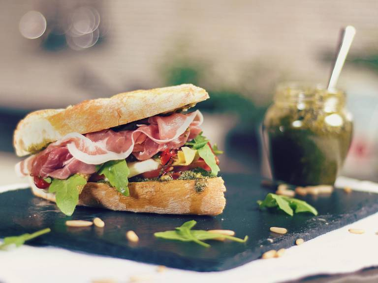

Proscuitto Sandwich
Back to index

Description
A proscuitto sandwich is a meal that is rich, tasty, and requires no
cooking. Though a bit pricey, you can feel like you're eating gourmet at home
with a sandwich like this.
Ingredients
- Bread of your choosing (Foccaciao is the best option)
- Olive Oil
- 3 slices Proscuitto (or more)
- Oregano, Salt, Pepper
- Mozzarella Cheese
- Tomato
Steps
- Prep the ingredients. Cut the tomato and mozzarella into thick slices.
- If your bread choice is not already split, cut into two pieces.
Toast lightly on a pan with a drizzle of olive oil, to your liking.
- Lay the bread out. Add slices of proscuitto first. Then add the tomato,
mozzarella, and salt/pepper/oregano, to taste.
- Before closing the sandwich, add drizzle of olive oil to top of sandwich.
Close sandwich and enjoy.